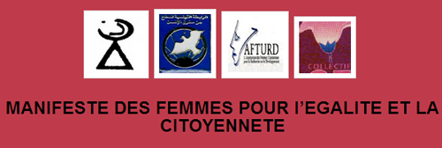

|
|
مانیفست زنان برای برابری و شهروندی زنان تونس
يكشنبه4 اردیبهشت 1390

تغییر برای برابری - ترجمه سوده راد -
گروه های فمینیستی در تونس، با انتشار مانیفستی خواسته هایشان را اعلام کردند. آنها ضمن ابراز خوشحالی از سرنگونی دیکتاتوری و افتخار به میراث مشترک اصلاح طلبانه در تونس، بر ادامه ی مبارزه برای بهبود شرایط زندگی شخصی و عمومی زنان تاکید کرده اند متن مانیفست زنان تونس در زیر آمده است.
ما زنان تونسی، در راه دموکراسی، برابری و عدالت اجتماعی، امروز با شادی انقلاب برای شأن انسانی را که با تلاش زنان و مردان به پیروزی رسید، جشن می گیریم. ما با احترام یاد ملت تونس را که دیکتاتور را سرنگون کرد گرامی می داریم و در پیشگاه شهدای جوان، زنان و مردان، سر تعظیم فرو می آوریم.
ما به ارزش های مدرنیته که سرزمینمان در طول قرن ها، بویژه سده ی اخیر، از زمان طاهر حداد تا قانون احوال شخصیه و قوانین مکمل آن اندوخته است، مفتخریم. ما به میراث مشترکمان که اصلاح طلبی و پیش روندگی ست، افتخار می کنیم.
ما، فمینیست ها، همبستگی خود را با چالش زنان و تعهد ما بر ادامه ی مبارزه برای بهبود شرایط زندگی شخصی و عمومی شان اعلام می کنیم و تأکید می کنیم که در مبارزه برای موارد زیر همچنین پایداریم:
• بر ضد هرگونه تبعیض و خشونت علیه زنان که در نظام مردسالار توجیه می شود
• بر ضد به حاشیه رانی اقتصادی و اجتماعی، نا برابری های منطقه ای، بیکاری و تأثیرات تبعیضانه ی آن بر زنان، تأثیرات جهانی شدن و لیبرالیسم اقتصادی که بر جوان ها و نواحی محروم فشارهای بیشتری آوردند
• بر ضد صداهای واکنشی که نام دین و فرهنگ به حقوق بدست آمده ی زنان حمله می کنند و هویت را در یک نگرش غیر قابل تغییر و از پیش تجویزشده محدود می کنند
• بر ضد سرکوب، همه ی اشکال استبداد، چون تلاش برای به تأخیر انداختن مردم سالاری، به حاشیه راندن های سیاسی، محدود کردن رسانه ای و یا بستن فضاهای عمومی
ما بر همبستگی با پیشرفت هایی که پیش از این در زمینه های زیر به دست آمده است تأکید می کنیم
• احوال شخصی و قوانین خانواده ی مکمل که می توانند نقطه ی آغاز مثبتی در قانون گذاری باشد و ما اصلاح این قوانین را تنها در جهت برابری جنسیتی مطالبه می کنیم
• حقوق اقتصادی و اجتماعی زنان، به خصوص حقوق آموزش و پرورش، بهداشت و سلامت، بهداشت زنان، مسکن، تأمین اجتماعی و دسترسی به شغل که از حقوق بنیادین بشر است
• مشارکت سیاسی زنان که باید در جهت پررنگ شدن حضور آنها در فضاهای عمومی و بهبود دسترسی و حضور آنها در مراکز تصمیم گیری باشد
• حقوق فرهنگی و روشنفکری و تنوع و آزادی عقاید، بیان و خلاقیت
ما پایبندی خود را در مبارزه و کنشگری برای بهبود همه ی حقوق، بویژه در موارد زیر اعلام می کنیم:
• سد راه هر تلاشی برای «عبور» از زنان به نام شرایط سیاسی یا دینی خواهیم شد و موضع ما سرچشمه از اعتقاد ما به ارزش های جهانی و من جمله کنوانسیون های بین المللی حقوق بشر است
• پذیرش کلیه ی مواد کنوانسیون بین المللی رفع هرگونه تبعیض علیه زنان و همه ی کنوانسیون های مربوط به حقوق جهانی زنان در همه ی زمینه ها
• تأمین حقوق زنان در کار، در بهداشت، در آموزش و پرورشی مدرن که به جوانان بازبودن اذهان، احترام به برابری، تقسیم برابر ثروت و مبارزه برای همه ی انواع تبعیض، به حاشیه راندن، تضعیف و حذف زنان
• جای دادن مسأله ی حقوق زنان در اولویت های عملیاتی جامعه ی سیاسی و شهروندی با عملیاتی کردن اصل عدم تبعیض جنسیتی، با تضمین اصل جدایی دین از سیاست در قانون اساسی جدید، با وافعیت بخشیدن به اصل برابری، با اصلاح قوانین و مکانیزم های کنترل با تأمین برابری دسترسی به امکان و فرصت ها، با حمایت از تمامیت جسمی و روانی زنان
ما این اصول و جهت گیری ها را به عنوان شروط پایه ای احقاق حقوق شهروندی زنان، در برپایی حاکمیت قانون و تضمین توسعه ی انسانی پایدار در تونس می دانیم.
انجمن زنان مردم سالار تونس
انجمن زنان برای پژوهش در توسعه تونس
اتحادیه ی 95 مغرب برابری
لیگ حقوق بشر تونس، کمیسیون زنان